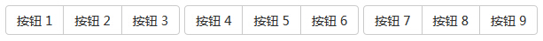
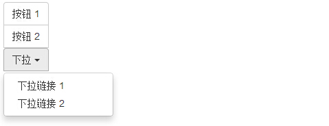

Bootstrap 按钮组
按钮组允许多个按钮被堆叠在同一行上。当你想要把按钮对齐在一起时，这就显得非常有用。您可以通过 Bootstrap 按钮（Button） 插件 添加可选的 JavaScript 单选框和复选框样式行为。
下面的表格总结了 Bootstrap 提供的使用按钮组的一些重要的 class：
| Class | 描述 | 代码示例 |
|---|---|---|
| .btn-group | 该 class 用于形成基本的按钮组。在 .btn-group 中放置一系列带有 class .btn 的按钮。 | <div class="btn-group"> <button type="button" class="btn btn-default">Button1</button> <button type="button" class="btn btn-default">Button2</button> </div> |
| .btn-toolbar | 该 class 有助于把几组 <div class="btn-group"> 结合到一个 <div class="btn-toolbar"> 中，一般获得更复杂的组件。 | <div class="btn-toolbar" role="toolbar"> <div class="btn-group">...</div> <div class="btn-group">...</div> </div> |
| .btn-group-lg, .btn-group-sm, .btn-group-xs | 这些 class 可应用到整个按钮组的大小调整，而不需要对每个按钮进行大小调整。 | <div class="btn-group btn-group-lg">...</div> <div class="btn-group btn-group-sm">...</div> <div class="btn-group btn-group-xs">...</div> |
| .btn-group-vertical | 该 class 让一组按钮垂直堆叠显示，而不是水平堆叠显示。 | <div class="btn-group-vertical"> ... </div> |
基本的按钮组
下面的实例演示了上面表格中讨论到的 class .btn-group 的使用：
<!DOCTYPE html> <html> <head> <title>Bootstrap 实例 - 基本的按钮组</title> <link href="/bootstrap/css/bootstrap.min.css" rel="stylesheet"> <script src="/scripts/jquery.min.js"></script> <script src="/bootstrap/js/bootstrap.min.js"></script> </head> <body> <div class="btn-group"> <button type="button" class="btn btn-default">按钮 1</button> <button type="button" class="btn btn-default">按钮 2</button> <button type="button" class="btn btn-default">按钮 3</button> </div> </body> </html>
结果如下所示：
按钮工具栏
下面的实例演示了上面表格中讨论到的 class .btn-toolbar 的使用：
<!DOCTYPE html> <html> <head> <title>Bootstrap 实例 - 按钮工具栏</title> <link href="/bootstrap/css/bootstrap.min.css" rel="stylesheet"> <script src="/scripts/jquery.min.js"></script> <script src="/bootstrap/js/bootstrap.min.js"></script> </head> <body> <div class="btn-toolbar" role="toolbar"> <div class="btn-group"> <button type="button" class="btn btn-default">按钮 1</button> <button type="button" class="btn btn-default">按钮 2</button> <button type="button" class="btn btn-default">按钮 3</button> </div> <div class="btn-group"> <button type="button" class="btn btn-default">按钮 4</button> <button type="button" class="btn btn-default">按钮 5</button> <button type="button" class="btn btn-default">按钮 6</button> </div> <div class="btn-group"> <button type="button" class="btn btn-default">按钮 7</button> <button type="button" class="btn btn-default">按钮 8</button> <button type="button" class="btn btn-default">按钮 9</button> </div> </div> </body> </html>
结果如下所示：

按钮的大小
下面的实例演示了上面表格中讨论到的 class .btn-group-* 的使用：
<!DOCTYPE html> <html> <head> <title>Bootstrap 实例 - 按钮组的大小</title> <link href="/bootstrap/css/bootstrap.min.css" rel="stylesheet"> <script src="/scripts/jquery.min.js"></script> <script src="/bootstrap/js/bootstrap.min.js"></script> </head> <body> <div class="btn-group btn-group-lg"> <button type="button" class="btn btn-default">按钮 1</button> <button type="button" class="btn btn-default">按钮 2</button> <button type="button" class="btn btn-default">按钮 3</button> </div> <div class="btn-group btn-group-sm"> <button type="button" class="btn btn-default">按钮 4</button> <button type="button" class="btn btn-default">按钮 5</button> <button type="button" class="btn btn-default">按钮 6</button> </div> <div class="btn-group btn-group-xs"> <button type="button" class="btn btn-default">按钮 7</button> <button type="button" class="btn btn-default">按钮 8</button> <button type="button" class="btn btn-default">按钮 9</button> </div> </body> </html>
结果如下所示：

嵌套
您可以在一个按钮组内嵌套另一个按钮组，即，在一个 .btn-group 内嵌套另一个 .btn-group 。当您向让下拉菜单与一系列按钮组合使用时，就会用到这个。
<!DOCTYPE html> <html> <head> <title>Bootstrap 实例 - 嵌套的按钮组</title> <link href="/bootstrap/css/bootstrap.min.css" rel="stylesheet"> <script src="/scripts/jquery.min.js"></script> <script src="/bootstrap/js/bootstrap.min.js"></script> </head> <body> <div class="btn-group"> <button type="button" class="btn btn-default">按钮 1</button> <button type="button" class="btn btn-default">按钮 2</button> <div class="btn-group"> <button type="button" class="btn btn-default dropdown-toggle" data-toggle="dropdown"> 下列 <span class="caret"></span> </button> <ul class="dropdown-menu"> <li><a href="#">下拉链接 1</a></li> <li><a href="#">下拉链接 2</a></li> </ul> </div> </div> </body> </html>
结果如下所示：
垂直的按钮组
下面的实例演示了上面表格中讨论到的 class .btn-group-vertical 的使用：
<!DOCTYPE html> <html> <head> <title>Bootstrap 实例 - 垂直的按钮组</title> <link href="/bootstrap/css/bootstrap.min.css" rel="stylesheet"> <script src="/scripts/jquery.min.js"></script> <script src="/bootstrap/js/bootstrap.min.js"></script> </head> <body> <div class="btn-group-vertical"> <button type="button" class="btn btn-default">按钮 1</button> <button type="button" class="btn btn-default">按钮 2</button> <div class="btn-group-vertical"> <button type="button" class="btn btn-default dropdown-toggle" data-toggle="dropdown"> 下拉 <span class="caret"></span> </button> <ul class="dropdown-menu"> <li><a href="#">下拉链接 1</a></li> <li><a href="#">下拉链接 2</a></li> </ul> </div> </div> </body> </html>
结果如下所示：
